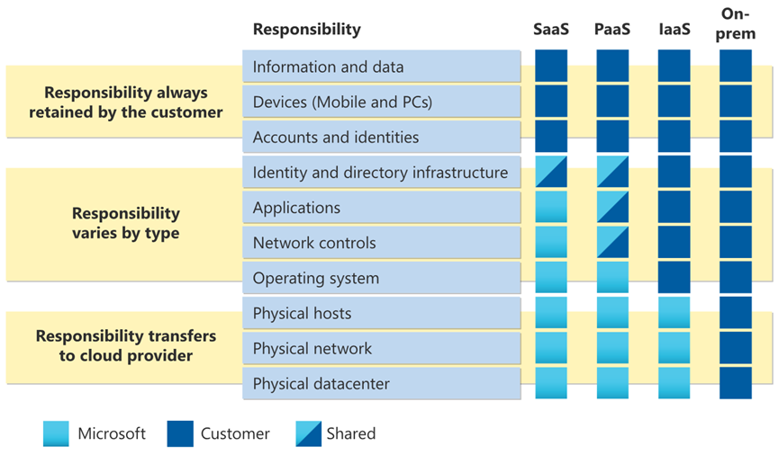

Microsoft 365
M365
Microsoft 365 (vaak afgekort tot M365) is een online productiviteitssuite van clouddiensten en -tools. Die bestaat hoofdzakelijk uit:
- Office-apps
- Apparaatbeheer (device management)
- Beveiligingsbeheer
- Online opslag
- ...
Microsoft 365 wordt gecategoriseerd als SaaS (Software as a Service).

Geschiedenis
De eerste online productiviteitssuite die Microsoft lanceerde, was Office 365. Dit product werd gelanceerd in 2011 en bood hoofdzakelijk een cloudgebaseerd abonnement op de klassieke applicaties (Word, Excel, PowerPoint en Outlook). Naast deze apps kon je ook Exchange Online, SharePoint Online en Skype for Business gebruiken.
Tussen 2013 en 2019 voegde Microsoft verschillende diensten en functies toe aan de Office 365-abonnementen, zoals OneDrive for Business, Teams en Power BI. Dat werd vooral gedreven door het succes van de Office 365-suite in het onderwijs en bij bedrijven. Daarnaast begon Microsoft zich in die periode ook te richten op device management met de introductie van Microsoft Intune, Endpoint Manager en Azure Active Directory. Die laatste diensten droegen vooral bij aan Mobile Device Management en Mobile Application Management. Ze maakten echter geen deel uit van de Office 365-suite. Het waren afzonderlijke diensten waarop je je kon abonneren.
In 2020 gaf Microsoft Office 365 een nieuwe naam, Microsoft 365, en bundelde het alle bovenstaande diensten en apps in één suite. Het aantal diensten dat in de abonnementen beschikbaar is, blijft groeien. Inmiddels is zelfs de licentie voor Windows 11 inbegrepen in het Microsoft 365-abonnement.
Apps en diensten
Microsoft 365 bestaat uit meerdere apps en diensten. In deze cursus richten we ons op de hieronder opgesomde apps en diensten. Voor de meeste van deze apps en diensten leer je hoe je ze configureert voor gangbaar gebruik in het werkveld. Aan elke app is een dienst gekoppeld. Sommige van die diensten kunnen wij configureren en andere niet. Die laatste worden door Microsoft geconfigureerd. Bijvoorbeeld:
- Teams: Microsoft biedt een Teams-applicatie aan die je kan installeren op je host (computer/smartphone) of kan gebruiken via de online Teams-applicatie in je browser. Deze app wordt gebruikt door de eindgebruikers. Het gebruik van deze app kan echter enkel via de Teams-dienst. Deze dienst kan worden geconfigureerd via het online admin center.
- Office: Microsoft biedt ook alle veelgebruikte applicaties aan, zoals Word, Excel, PowerPoint, ... Ofwel via de geïnstalleerde Office-suite op je host, ofwel via de online Office-applicaties in je browser. In tegenstelling tot de Teams-dienst zijn de diensten die aan alle Office-applicaties gekoppeld zijn, niet configureerbaar en hebben ze geen admin center.
Overzicht van veelgebruikte apps en diensten:
- Entra ID: dienst voor identiteits- en toegangsbeheer voor alle M365-applicaties en -diensten.
- Intune: dienst voor het beheer en de controle van endpointtoestellen binnen één entiteit.
- SharePoint: deze dienst vergemakkelijkt het delen, beheren en organiseren van documenten binnen teams en organisaties.
- Exchange: dienst voor e-mailcommunicatie, agenda's, contacten en taken.
- OneDrive: online opslagoplossing voor persoonlijke bestanden en mappen.
- Teams: platform voor communicatie en samenwerking. Met deze dienst kunnen gebruikers chatten, bellen, vergaderen en samenwerken aan documenten in één omgeving.
- Power Automate: automatiseringstool waarmee eindgebruikers workflows en taken kunnen aanmaken tussen verschillende M365-applicaties en -diensten om de efficiëntie te verhogen.
- Engage: intern sociaalmediaplatform voor medewerkers.